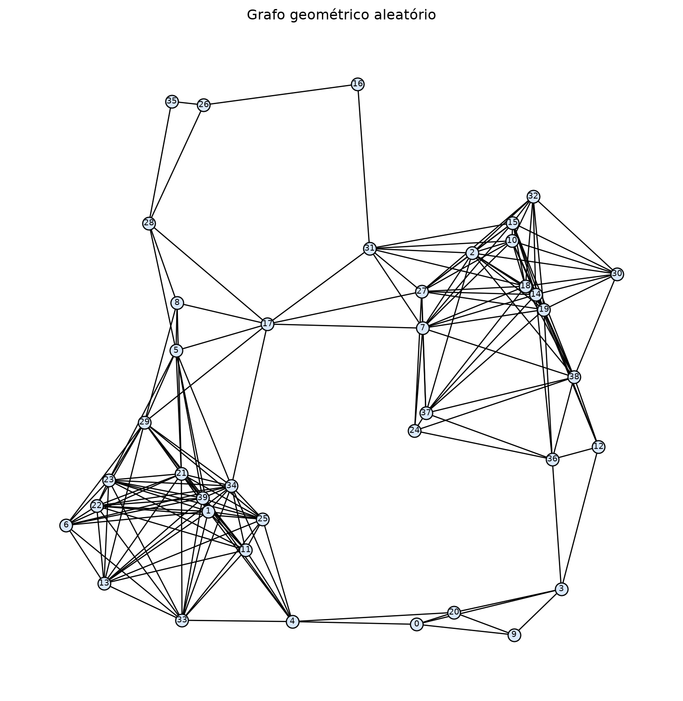

import random
import time
import math
import pandas as pd
import networkx as nx
import matplotlib.pyplot as pltLaboratório - Avaliação de Desempenho e Completude dos Métodos de Busca
Ajustando ambiente
Motivação
Os capítulos 1 e 2 ensinaram BFS, busca de custo uniforme (UCS), busca gulosa (GBFS) e A* sobre um grafo didático pequeno (13 cidades, a maioria com arestas de custo igual). Esse grafo é ótimo para acompanhar o algoritmo passo a passo, mas pequeno demais para revelar diferenças reais de desempenho entre as estratégias, e uniforme demais para mostrar que nem todo algoritmo encontra o caminho de menor custo. Este capítulo gera um grafo aleatório maior — com pesos de aresta variados e derivados de coordenadas reais — e usa as implementações prontas e testadas do NetworkX para resolver dezenas de pares (estado inicial, objetivo), medindo tempo de execução, custo e completude de cada estratégia.
Objetivos de Aprendizagem
- Gerar um grafo aleatório adequado para busca: um grafo geométrico conexo, com pesos de aresta que tornam a heurística de distância em linha reta admissível por construção.
- Reaproveitar buscas prontas do NetworkX: usar as implementações nativas de busca em largura, Dijkstra (equivalente a UCS) e A*, em vez de reimplementar os algoritmos.
- Obter a Busca Gulosa a partir do A*: entender por que anular o custo acumulado no A* do NetworkX produz exatamente o comportamento da GBFS.
- Medir desempenho: comparar tempo de execução, custo e comprimento do caminho encontrado por cada algoritmo em múltiplos cenários.
- Avaliar completude: verificar se cada algoritmo relata corretamente a ausência de solução quando ela não existe.
Implementação
Geração do grafo aleatório
Cada nó recebe uma posição aleatória num plano 2D; dois nós são conectados se a distância entre eles for menor que um raio (grafo geométrico aleatório). O peso de cada aresta é a própria distância euclidiana entre os pontos — é isso que garante que a distância em linha reta até o objetivo nunca superestima o custo real do caminho (desigualdade triangular), tornando-a uma heurística admissível para qualquer par (estado, objetivo), sem precisar de um dicionário de heurística fixo como no capítulo 2.
def generate_random_graph(n_nodes=40, seed=42):
"""Gera um grafo geométrico aleatório conexo, com nós posicionados em um plano 2D."""
radius = 0.2
graph = None
for _ in range(20):
graph = nx.random_geometric_graph(n_nodes, radius, seed=seed)
if nx.is_connected(graph):
break
radius += 0.05
else:
raise RuntimeError('Não foi possível gerar um grafo conexo; ajuste n_nodes ou o raio inicial.')
coords = nx.get_node_attributes(graph, 'pos')
for a, b in graph.edges:
graph[a][b]['weight'] = math.dist(coords[a], coords[b])
return graph, coordsgraph, coords = generate_random_graph()
plt.figure(figsize=(8, 8))
nx.draw(graph, pos=coords, node_size=120, node_color='#d9e8fb', edgecolors='black', with_labels=True, font_size=7)
plt.title('Grafo geométrico aleatório')
plt.show()
Funções de busca
BFS, UCS (Dijkstra) e A* já têm implementação pronta no NetworkX — reaproveitamos essas funções em vez de reescrevê-las. A Busca Gulosa não tem uma função própria: obtemos o mesmo comportamento a partir do A*, anulando o peso das arestas (weight=0) para que a ordenação da fronteira dependa só da heurística \(h(n)\), exatamente como a GBFS do capítulo 2.
def bfs_path(graph, start, goal):
"""Busca em largura: caminho com o menor número de arestas, via NetworkX."""
try:
return nx.shortest_path(graph, start, goal, weight=None)
except nx.NetworkXNoPath:
return None
def dfs_path(graph, start, goal):
"""Um caminho encontrado por busca em profundidade, via NetworkX (não é garantidamente o mais curto)."""
tree = nx.dfs_tree(graph, start)
if goal not in tree:
return None
return nx.shortest_path(tree, start, goal)
def ucs_path(graph, start, goal):
"""Busca de custo uniforme: caminho de menor custo, via Dijkstra do NetworkX."""
try:
return nx.dijkstra_path(graph, start, goal, weight='weight')
except nx.NetworkXNoPath:
return None
def astar_path_search(graph, start, goal, coords):
"""Busca A*: caminho de menor custo total estimado, via NetworkX."""
heuristic = lambda a, b: math.dist(coords[a], coords[b])
try:
return nx.astar_path(graph, start, goal, heuristic=heuristic, weight='weight')
except nx.NetworkXNoPath:
return None
def gbfs_path(graph, start, goal, coords):
"""Busca gulosa: A* do NetworkX com o custo acumulado g(n) anulado, restando só h(n)."""
heuristic = lambda a, b: math.dist(coords[a], coords[b])
try:
return nx.astar_path(graph, start, goal, heuristic=heuristic, weight=lambda u, v, d: 0)
except nx.NetworkXNoPath:
return None
def path_cost(graph, path):
"""Soma o peso das arestas de um caminho encontrado no grafo."""
if not path:
return None
return nx.path_weight(graph, path, weight='weight')Complexidade assintótica
Como aqui a busca roda sobre um grafo (via NetworkX), a notação natural é em função de \(V\) (número de nós) e \(E\) (número de arestas) — diferente da notação \(b\) (fator de ramificação) e \(d\) (profundidade) usada nos capítulos 1 e 2 para busca em árvore. As duas descrevem a mesma ideia sob premissas diferentes; a tabela abaixo usa a notação de grafo, que é a que se aplica ao código deste capítulo.
| Algoritmo | Tempo (pior caso) | Espaço |
|---|---|---|
| BFS | \(O(V + E)\) | \(O(V)\) |
| DFS | \(O(V + E)\) | \(O(V)\) |
| UCS (Dijkstra) | \(O((V + E) \log V)\) | \(O(V)\) |
| A* | \(O((V + E) \log V)\) | \(O(V)\) |
| GBFS | \(O((V + E) \log V)\) | \(O(V)\) |
BFS e DFS visitam cada nó e cada aresta no máximo uma vez, daí \(O(V+E)\). UCS, A* e GBFS usam uma fila de prioridade (heap binário, a implementação do NetworkX) para decidir o próximo nó a expandir, o que custa \(O(\log V)\) por operação — daí o fator extra. GBFS tem exatamente a mesma forma do A* (é literalmente a mesma função, com o peso zerado): trocar o critério de ordenação não muda a classe de complexidade no pior caso, só o comportamento típico.
Exemplo prático
start_node, goal_node = 0, len(graph) - 1
algorithms = {
'BFS': lambda: bfs_path(graph, start_node, goal_node),
'DFS': lambda: dfs_path(graph, start_node, goal_node),
'UCS': lambda: ucs_path(graph, start_node, goal_node),
'GBFS': lambda: gbfs_path(graph, start_node, goal_node, coords),
'A*': lambda: astar_path_search(graph, start_node, goal_node, coords),
}
for name, search in algorithms.items():
start_time = time.perf_counter()
path = search()
elapsed = time.perf_counter() - start_time
print(f"{name:5} | encontrou={path is not None!s:5} | custo={path_cost(graph, path)} | "
f"arestas={len(path) - 1 if path else None} | tempo={elapsed * 1000:.3f} ms")BFS | encontrou=True | custo=0.4852840934736458 | arestas=2 | tempo=0.368 ms
DFS | encontrou=True | custo=3.6196780590759605 | arestas=19 | tempo=0.563 ms
UCS | encontrou=True | custo=0.4852840934736458 | arestas=2 | tempo=0.489 ms
GBFS | encontrou=True | custo=0.4852840934736458 | arestas=2 | tempo=0.178 ms
A* | encontrou=True | custo=0.4852840934736458 | arestas=2 | tempo=0.021 msAvaliação de desempenho
Sorteamos vários pares (estado inicial, objetivo) diferentes e rodamos os cinco algoritmos em cada um, registrando tempo, custo e comprimento do caminho encontrado.
random.seed(42)
NUM_TRIALS = 20
nodes = list(graph.nodes)
test_pairs = [tuple(random.sample(nodes, 2)) for _ in range(NUM_TRIALS)]
results = []
for start, goal in test_pairs:
for name, search in {
'BFS': lambda: bfs_path(graph, start, goal),
'DFS': lambda: dfs_path(graph, start, goal),
'UCS': lambda: ucs_path(graph, start, goal),
'GBFS': lambda: gbfs_path(graph, start, goal, coords),
'A*': lambda: astar_path_search(graph, start, goal, coords),
}.items():
start_time = time.perf_counter()
path = search()
elapsed = time.perf_counter() - start_time
results.append({
'algoritmo': name,
'encontrou': path is not None,
'custo': path_cost(graph, path),
'arestas': len(path) - 1 if path else None,
'tempo_ms': elapsed * 1000,
})results_df = pd.DataFrame(results)
summary = results_df.groupby('algoritmo').agg(
taxa_sucesso=('encontrou', 'mean'),
custo_medio=('custo', 'mean'),
arestas_media=('arestas', 'mean'),
tempo_medio_ms=('tempo_ms', 'mean'),
).round(3)
display(summary)| taxa_sucesso | custo_medio | arestas_media | tempo_medio_ms | |
|---|---|---|---|---|
| algoritmo | ||||
| A* | 1.0 | 0.531 | 2.45 | 0.025 |
| BFS | 1.0 | 0.551 | 2.45 | 0.011 |
| DFS | 1.0 | 2.601 | 13.40 | 0.118 |
| GBFS | 1.0 | 0.540 | 2.50 | 0.020 |
| UCS | 1.0 | 0.531 | 2.45 | 0.065 |
Como o grafo gerado é conexo, taxa_sucesso deve ficar em 1.0 para os cinco algoritmos — todos encontram algum caminho em todo par testado. É nas outras colunas que as diferenças aparecem: custo_medio deve ser o mesmo (e o mais baixo) para UCS e A, já que ambos garantem o caminho de menor custo; BFS e GBFS tendem a um custo_medio mais alto, porque otimizam outra coisa (menor número de arestas e heurística, respectivamente), não o custo acumulado. arestas_media costuma ser menor para a BFS, que por definição encontra o caminho com menos passos, mesmo que mais caro. Em tempo_medio_ms, espere a DFS ser a mais rápida (explora sem se preocupar em comparar alternativas) e o A ser competitivo com a UCS ou mais rápido — a heurística evita expandir ramos que se afastam do objetivo, mesmo mantendo a garantia de custo mínimo.
Vale conectar isso com a complexidade assintótica da seção anterior: BFS e DFS são \(O(V+E)\), enquanto UCS, A* e GBFS são \(O((V+E)\log V)\) por causa da fila de prioridade — por isso não é surpresa se tempo_medio_ms for um pouco maior para os três, mesmo num grafo pequeno como este. O ponto mais interessante é que A* e UCS têm a mesma complexidade de pior caso, mas na prática A* tende a ser mais rápido: a heurística poda ramos que se afastam do objetivo, então A* efetivamente processa uma fração de \(V\), enquanto UCS, sem heurística nenhuma, se aproxima mais do pior caso teórico. O limite assintótico é o mesmo; o comportamento típico não.
Avaliação de completude
Completude não é uma propriedade “tudo ou nada” de um algoritmo isoladamente — ela depende de como o espaço de busca está estruturado. Esta seção testa os cinco algoritmos contra um caso-base (objetivo inalcançável num grafo bem-comportado) e quatro “armadilhas” estruturais clássicas que a literatura usa para separar algoritmos completos de incompletos: ciclos sem controle de visitados, ramos muito profundos, fator de ramificação infinito e custos de aresta nulos ou negativos.
Cenário A — objetivo inalcançável
Adicionamos um nó propositalmente isolado (sem nenhuma aresta) e tentamos alcançá-lo a partir de um estado conectado. Um algoritmo completo deve relatar corretamente que não há solução, em vez de travar ou lançar um erro inesperado.
graph_with_isolated_node = graph.copy()
graph_with_isolated_node.add_node('isolated')
coords_with_isolated_node = dict(coords)
for name, search in {
'BFS': lambda: bfs_path(graph_with_isolated_node, 0, 'isolated'),
'DFS': lambda: dfs_path(graph_with_isolated_node, 0, 'isolated'),
'UCS': lambda: ucs_path(graph_with_isolated_node, 0, 'isolated'),
'GBFS': lambda: gbfs_path(graph_with_isolated_node, 0, 'isolated', coords_with_isolated_node) if 'isolated' in coords_with_isolated_node else 'N/A (sem coordenada)',
'A*': lambda: astar_path_search(graph_with_isolated_node, 0, 'isolated', coords_with_isolated_node) if 'isolated' in coords_with_isolated_node else 'N/A (sem coordenada)',
}.items():
print(name, '->', search())BFS -> None
DFS -> None
UCS -> None
GBFS -> N/A (sem coordenada)
A* -> N/A (sem coordenada)Espera-se que as cinco linhas impressas terminem em None (ou equivalente): nenhum algoritmo encontra caminho até 'isolated', porque não existe nenhuma aresta ligando esse nó ao resto do grafo. O ponto do teste não é o valor em si — é que nenhum algoritmo trava, entra em loop infinito ou lança um erro inesperado ao lidar com um objetivo inalcançável; cada um percorre todo o espaço de busca acessível a partir do estado inicial e conclui corretamente que não há solução.
Cenário B — Ciclos sem controle de estados visitados
O resultado acima só vale porque dfs_path evita repetir estados (é o que nx.dfs_tree garante internamente) — isso a torna completa em qualquer grafo finito. Uma DFS “ingênua”, sem esse controle, não tem essa garantia: num grafo com ciclos, ela pode ficar alternando entre os mesmos poucos nós indefinidamente, sem nunca esgotar as alternativas e sem nunca concluir que não há solução. Como não dá para deixar uma célula rodando para sempre, colocamos um limite de passos de segurança — se ele for atingido, é sinal de que a busca não terminaria sozinha. (O mesmo raciocínio vale para BFS, UCS e A*: qualquer um deles, sem controle de visitados, cairia na mesma armadilha num grafo cíclico. nx.shortest_path, nx.dijkstra_path e nx.astar_path já fazem esse controle internamente, por isso não repetimos a demonstração para cada um.)
def naive_dfs_path(graph, start, goal, max_steps=2000):
"""DFS sem controle de estados visitados: pode ciclar indefinidamente em grafos com ciclos."""
frontier = [[start]]
steps = 0
while frontier:
steps += 1
if steps > max_steps:
return f'não terminou em {max_steps} passos'
path = frontier.pop()
current = path[-1]
if current == goal:
return path
for neighbor in graph.neighbors(current):
frontier.append(path + [neighbor])
return Noneprint('DFS (com controle de visitados): ', dfs_path(graph_with_isolated_node, 0, 'isolated'))
print('DFS ingênua (sem controle de visitados):', naive_dfs_path(graph_with_isolated_node, 0, 'isolated'))DFS (com controle de visitados): None
DFS ingênua (sem controle de visitados): não terminou em 2000 passosO esperado é uma diferença nítida entre as duas linhas: dfs_path retorna None quase instantaneamente, porque esgota o componente alcançável e conclui corretamente que 'isolated' não está nele. Já naive_dfs_path, na maioria dos grafos gerados (que costumam ter mais arestas do que uma árvore, logo têm ciclos), deve atingir max_steps sem terminar — sem controle de visitados, ela fica reexplorando repetidamente as mesmas arestas dentro de um ciclo, nunca “esgotando” as alternativas. É exatamente essa a incompletude teórica da DFS em árvore que o capítulo 1 menciona. (Se o grafo gerado nesta execução for uma árvore, sem ciclos, naive_dfs_path também terminaria corretamente — nesse caso, aumente n_nodes ou o raio em generate_random_graph para garantir arestas extras além da árvore geradora.)
Cenário C — Ramos muito profundos
Controlar visitados resolve o problema dos ciclos, mas não resolve um segundo problema, mais fundamental: mesmo sem repetir nenhum estado, a DFS pode se comprometer com um ramo muito profundo (ou, no limite teórico, infinito) e nunca voltar para tentar um ramo raso onde o objetivo estaria a um passo de distância. Isso não depende de ciclo nenhum — depende só da ordem de exploração (profundidade primeiro).
Construímos um grafo em forma de “Y”: um objetivo ('shallow_goal') a um único passo do início, e uma cadeia longa (sem o objetivo) partindo do mesmo nó. Adicionamos a aresta do objetivo raso antes da cadeia longa, para que a DFS (que empilha e desempilha pelo final da lista) escolha mergulhar na cadeia longa primeiro — exatamente o comportamento que uma DFS real teria ao encontrar esse ramo primeiro.
def capped_dfs_path(graph, start, goal, max_steps=2000):
"""DFS com controle de visitados, mas com limite de passos — simula um ramo profundo demais para terminar em tempo hábil."""
frontier = [[start]]
visited = set()
steps = 0
while frontier:
steps += 1
if steps > max_steps:
return f'não terminou em {max_steps} passos'
path = frontier.pop()
current = path[-1]
if current == goal:
return path
if current in visited:
continue
visited.add(current)
for neighbor in graph.neighbors(current):
if neighbor not in visited:
frontier.append(path + [neighbor])
return None
DEEP_CHAIN_LENGTH = 5000
deep_branch_graph = nx.Graph()
deep_branch_graph.add_edge(0, 'shallow_goal')
nx.add_path(deep_branch_graph, range(DEEP_CHAIN_LENGTH))print('DFS com limite de passos:', capped_dfs_path(deep_branch_graph, 0, 'shallow_goal', max_steps=50))
print('BFS: ', bfs_path(deep_branch_graph, 0, 'shallow_goal'))DFS com limite de passos: não terminou em 50 passos
BFS: [0, 'shallow_goal']O objetivo está a um passo do início, mas a DFS com max_steps=50 deve retornar “não terminou”: ela mergulha pela cadeia longa (nós 0, 1, 2, 3, ...) e só voltaria para tentar 'shallow_goal' depois de esgotar toda a cadeia — o que, com uma cadeia de 5.000 nós e um limite de 50 passos, nunca acontece dentro do orçamento. A BFS, por explorar em camadas, encontra 'shallow_goal' na primeira camada, independentemente de quão longa seja a cadeia ignorada. Isso ilustra por que a completude da DFS depende do tamanho/profundidade do espaço de busca, mesmo com controle de visitados — enquanto a completude da BFS (com fator de ramificação finito) não depende disso.
Vale uma nota sobre notação: a distinção clássica “DFS gasta \(O(b \cdot d)\) de memória, BFS gasta \(O(b^d)\)” (capítulos 1/2, \(b\) = fator de ramificação, \(d\) = profundidade) é sobre busca em árvore, sem grafo finito e sem conjunto de visitados — é o cenário em que a economia de memória da DFS realmente compensa. Nas nossas funções, que rodam sobre um grafo finito com controle de visitados, ambas são \(O(V)\) de espaço no pior caso (tabela na seção “Funções de busca”) — a vantagem de memória da DFS desaparece nesse contexto. O que sobra, como este cenário mostra, é só a fragilidade de tempo: comprometer-se com o ramo errado primeiro.
Cenário D — Fator de ramificação infinito
Nem toda estrutura cabe num networkx.Graph (que exige uma lista finita de vizinhos por nó) — um nó com infinitos filhos só pode ser representado por uma função geradora. Simulamos isso com um gerador que nunca para de produzir “filhos” para um nó específico, e uma BFS escrita à mão que consome essa função em vez de um grafo do NetworkX.
def infinite_children(node):
"""Gerador de filhos 'infinitos' para simular um nó com fator de ramificação infinito."""
i = 0
while True:
yield f'{node}_child_{i}'
i += 1
def bfs_with_generator(root, goal, get_children, max_expansions=2000):
"""BFS sobre uma função geradora de filhos (não um grafo do NetworkX), para simular ramificação infinita."""
frontier = [root]
expansions = 0
while frontier:
current = frontier.pop(0)
if current == goal:
return current
for child in get_children(current):
expansions += 1
if expansions > max_expansions:
return f'não terminou em {max_expansions} expansões (ainda na 1ª camada)'
frontier.append(child)
return None
def root_children(node):
return infinite_children(node) if node == 'root' else []print('BFS com nó de ramificação infinita:', bfs_with_generator('root', 'goal_no_nivel_2', root_children, max_expansions=2000))BFS com nó de ramificação infinita: não terminou em 2000 expansões (ainda na 1ª camada)O objetivo ('goal_no_nivel_2') nem existe de fato neste grafo — o ponto é que a BFS jamais chegaria a verificar isso: como 'root' tem infinitos filhos, o laço que enumera os vizinhos de 'root' nunca termina naturalmente, e a BFS fica presa expandindo a primeira camada para sempre. Diferente do Cenário C, aqui é a própria BFS que falha — o fator de ramificação infinito ataca justamente a estratégia “explorar uma camada inteira antes de avançar”, que era a vantagem da BFS nos cenários anteriores.
Cenário E — Custos de aresta nulos ou negativos
O UCS/Dijkstra garante o caminho de menor custo sob a premissa de que nenhuma aresta tem peso negativo.
Arestas de custo zero não quebram essa premissa. Uma implementação correta, como a nossa, marca um estado como resolvido assim que ele é retirado da fronteira e não o reconsidera depois — um ciclo de custo zero não faz o algoritmo repetir esse estado.
O problema real aparece com pesos negativos. Um ciclo cujo custo total é negativo torna o próprio conceito de “caminho mais barato” mal definido: percorrer o ciclo mais vezes sempre reduz o custo, então o mínimo verdadeiro seria \(-\infty\).
negative_cycle_graph = nx.DiGraph()
negative_cycle_graph.add_weighted_edges_from([
('A', 'B', 1),
('B', 'C', -3),
1 ('C', 'A', 1),
('A', 'goal', 10),
])
2print('Existe ciclo de custo negativo alcançável a partir de A?', nx.negative_edge_cycle(negative_cycle_graph, weight='weight'))
try:
3 print('UCS (Dijkstra):', ucs_path(negative_cycle_graph, 'A', 'goal'))
except ValueError as erro:
print('UCS (Dijkstra) se recusa a responder:', erro)
try:
4 print('Bellman-Ford:', nx.bellman_ford_path(negative_cycle_graph, 'A', 'goal', weight='weight'))
except nx.NetworkXUnbounded as erro:
print('Bellman-Ford se recusa a responder:', erro)- 1
-
Esta aresta fecha o ciclo
A -> B -> C -> A, com custo total1 + (-3) + 1 = -1— um ciclo de custo negativo. - 2
-
nx.negative_edge_cycleverifica, de forma nativa, se existe algum ciclo de custo negativo alcançável a partir deA— sem precisar rodar nenhuma busca para descobrir isso. - 3
- UCS/Dijkstra não faz essa verificação sozinho: só percebe que algo está errado ao tentar recalcular a distância de um nó que já havia sido finalizado.
- 4
- O Bellman-Ford foi desenhado para tolerar pesos negativos, então ele detecta e nomeia o problema (ciclo negativo), em vez de só levantar um erro genérico.
Existe ciclo de custo negativo alcançável a partir de A? True
UCS (Dijkstra) se recusa a responder: ('Contradictory paths found:', 'negative weights?')
Bellman-Ford se recusa a responder: Negative cycle detected.Perceba que o nx.negative_edge_cycle confirma que há um ciclo de custo negativo alcançável a partir de 'A'.
Rastreando o Dijkstra à mão: ele finaliza A com distância 0, depois B (1), depois C (1 + (-3) = -2). Ao expandir C, encontra A de novo com distância -2 + 1 = -1 — menor que a distância já finalizada para A. O NetworkX percebe essa inconsistência e levanta ValueError em vez de devolver um caminho errado silenciosamente — só que sem dizer por quê (a mensagem é genérica: “contradictory paths found”). O Bellman-Ford vai além: identifica explicitamente a causa (o ciclo negativo) e se recusa a responder de forma direcionada (NetworkXUnbounded).
Nos dois casos o algoritmo não trava nem retorna um resultado incorreto silenciosamente — mas nenhum dos dois calcula “o caminho mais barato”, porque essa noção deixa de fazer sentido na presença de um ciclo de custo negativo. A* e a GBFS herdam a mesma dependência de custos não negativos, já que também usam weight para calcular \(g(n)\).
A heurística do A* e da GBFS: completude vs. otimalidade
Vale corrigir uma confusão comum: uma heurística inadmissível (que superestima o custo restante) não tira a completude do A* num grafo finito com pesos não negativos — ele ainda vai, no pior caso, considerar todos os nós alcançáveis. O que a inadmissibilidade compromete é a otimalidade: o A* pode devolver um caminho mais caro do que o necessário, e a GBFS (que ignora completamente \(g(n)\)) é ainda mais vulnerável a isso, podendo ser desviada para um caminho bem pior.
misleading_graph = nx.DiGraph()
misleading_graph.add_weighted_edges_from([
('A', 'B', 1), ('B', 'C', 1), ('C', 'goal', 1), # caminho real mais barato: custo 3
('A', 'D', 10), ('D', 'goal', 1), # caminho mais caro: custo 11
])
misleading_heuristic = {'A': 0, 'B': 8, 'C': 1, 'D': 1, 'goal': 0} # h(B)=8 superestima muito o custo restante (real: 2)
greedy_result = nx.astar_path(misleading_graph, 'A', 'goal', heuristic=lambda a, b: misleading_heuristic[a], weight=lambda u, v, d: 0)
astar_result = nx.astar_path(misleading_graph, 'A', 'goal', heuristic=lambda a, b: misleading_heuristic[a], weight='weight')
print('GBFS (só heurística):', greedy_result, '- custo real:', path_cost(misleading_graph, greedy_result))
print('A* (custo + heurística):', astar_result, '- custo real:', path_cost(misleading_graph, astar_result))GBFS (só heurística): ['A', 'D', 'goal'] - custo real: 11
A* (custo + heurística): ['A', 'B', 'C', 'goal'] - custo real: 3Com essa heurística propositalmente enganosa, a GBFS deve escolher A -> D -> goal (custo real 11): como só olha \(h(n)\), e \(h(D)=1\) parece mais promissor que \(h(B)=8\), ela nunca chega a considerar o caminho por B.
Por outro lado, o A*, por somar \(g(n)+h(n)\), ainda prefere B no primeiro passo (\(f(B)=1+8=9\) contra \(f(D)=10+1=11\)) e termina encontrando o caminho ótimo A -> B -> C -> goal (custo 3) — mesmo recebendo exatamente a mesma heurística ruim. Isso mostra, lado a lado, por que a GBFS é mais frágil a heurísticas de má qualidade do que o A: o custo acumulado que o A carrega funciona como um contrapeso que a GBFS não tem.
Perguntas para reflexão
- A tabela de desempenho mostra que UCS e A* sempre encontram o caminho de menor custo, mas com tempos e comprimentos de caminho diferentes dos demais algoritmos. O que isso revela sobre o papel de uma heurística admissível: ela muda o que é encontrado, ou só quão rápido se chega lá?
- BFS e GBFS raramente coincidem com o caminho de custo mínimo encontrado por UCS/A*. Em que tipo de aplicação essa perda de otimalidade seria aceitável em troca de velocidade ou simplicidade, e em que tipo ela seria inaceitável?
- Todos os algoritmos reportaram corretamente a ausência de caminho até o nó isolado. Isso significa que, na prática, qualquer um deles poderia substituir os outros? O que a completude garante sobre um algoritmo de busca — e o que ela deixa completamente em aberto sobre a qualidade da solução encontrada?
- Se este grafo fosse muito maior (milhões de nós, como uma malha viária real), qual desses algoritmos você escolheria para uma aplicação que precisa de resposta em tempo real, e qual para uma que exige a rota mais barata garantida? Justifique com base no que os resultados deste capítulo mostraram sobre cada um.
Key takeaways
- Nem todo algoritmo de busca é ótimo em custo: BFS garante o menor número de arestas, não o menor custo — só UCS e A* garantem isso num grafo com pesos variados.
- A Busca Gulosa não precisa de uma implementação própria: é o A* com o custo acumulado
g(n)anulado, restando só a heurística. - Reaproveitar implementações testadas (NetworkX) permite focar a avaliação no comportamento dos algoritmos, não na correção do próprio código.
- Completude (sempre reportar corretamente quando não há solução) é uma propriedade distinta de otimalidade (encontrar o melhor caminho) — os testes deste capítulo avaliam coisas diferentes.
- A completude não é uma propriedade fixa de um algoritmo: depende da estrutura do espaço de busca. Controle de visitados resolve ciclos, mas não resolve ramos muito profundos (onde só a BFS sobrevive) nem fator de ramificação infinito (onde nem a BFS sobrevive).
- Heurística inadmissível compromete a otimalidade, não a completude do A* — mas compromete as duas coisas na GBFS, que não tem o custo acumulado como contrapeso.
- UCS/A* garantem o caminho de menor custo assumindo pesos não negativos; um ciclo de custo negativo torna “o caminho mais barato” indefinido. O Dijkstra do NetworkX percebe que algo está errado (levanta
ValueError) mas não diz por quê; só o Bellman-Ford identifica a causa explicitamente.
Referencias
- Russell, S. & Norvig, P. (2010). Artificial Intelligence: A Modern Approach. Prentice Hall.
- NetworkX — Shortest Paths